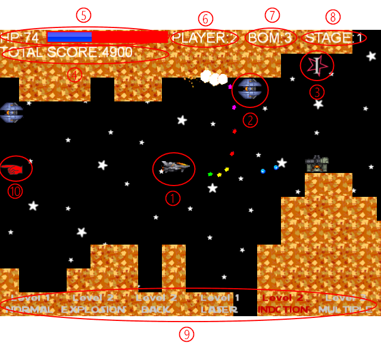
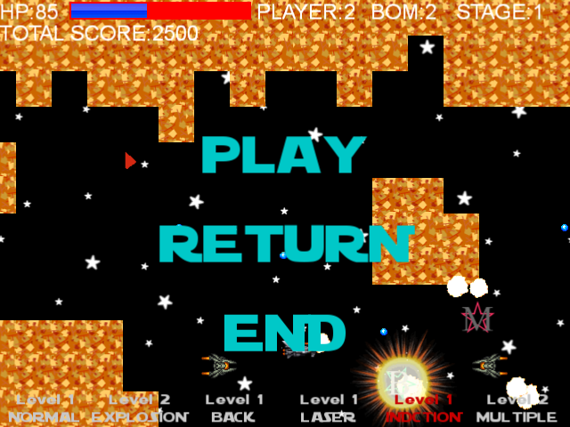
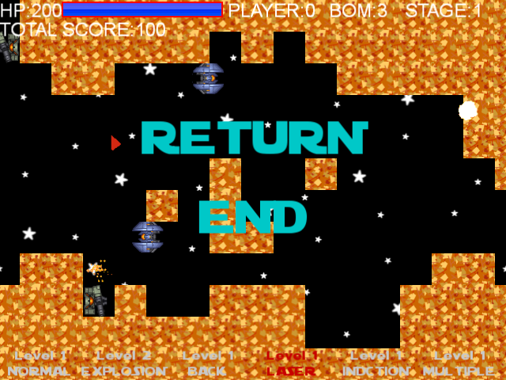

ゲーム画面

①プレイヤーキャラクター....プレイヤーが操作できる。
②
敵キャラクター...........一定以上ショットを当てると撃破しスコアが加算される。
③
アイテム.................確率で敵を倒すと出現する。取ると各種攻撃のレベルアップやプレイヤーのステータスが上がる。
④スコア..................敵を撃破すると加算される。ゲーム終了時にHigh Scoreを更新すると記録される。
⑤HP.....................敵や敵の弾に被弾すると減少し0でプレイヤー残機数が1減る。
⑥プレイヤー残機数.......プレイヤーの残り残機数。0の状態でHP0になるとゲームオーバー。
⑦ボム数.................ボムボタンを押すことで画面全体にダメージを与えることができる回数。
⑧ステージナンバー.......現在のステージナンバー。ステージの最後にボスを倒すと次のステージに進む。全部で3ステージ。
⑨
攻撃タイプ一覧.........攻撃切り替えボタンで攻撃を切り替えられる。下が攻撃名、上がそのレベルを表す。
⑩予告エフェクト.........後ろから出現する敵の位置を事前に予告する。
ポーズ

ゲーム画面でポーズボタンを押すと表示される。
PLAY.....ゲームに復帰する。
RETURN...ゲームを最初からやり直す。
END......
リプレイ選択画面に移動。
ゲームオーバー

残機数0でHPが0になると表示される。
RETURN.....最初のステージからやり直し。
END........
リプレイ選択画面に移動。